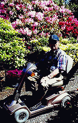
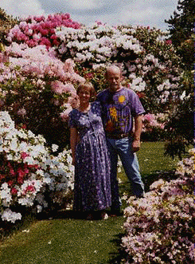

Introduction History Spring Tour Other Seasons Companion Plants Fruit/Veg/Herbs Work Family Links ARS
Visiting the Garden Design Elements SPECIMENS TIPS GARDEN FURNITURE
Visiting the Anderson Garden
(Visiting information below)
Welcome, Tacoma Chapter of the American Rhododendron Society




Over the years, we have been
happy to welcome thousands of individuals from around the world
and many local garden clubs as visitors. The American
Rhododendron Society has brought several busloads of rhododendron
enthusiasts in 1993 and 1999 when their national conventions were
held in the Seattle area. We have enjoyed sharing the garden in
this way and hope to continue this tradition.
In 2002, the garden is open
to the public on Sundays in May and at other times by appointment.
Members
of the American Rhododendron Society
are welcome to visit at any time. Garden clubs and other non-profit
groups may visit by appointment. The garden is not, however, open
to any commercial tours. The Anderson Garden is a private home
and garden, with no parking lot, rest rooms, or picnic area. There
has never been a charge to visit the garden. Contributions we
do receive are sent to the Autism Society
of Washington.
Contact us by email or phone (360) 825-3201 if you would like to bring a group.
24921 SE 448th Street,
Enumclaw, WA 98022
Click
here for directions.
Introduction History Spring Tour Other Seasons Companion Plants Fruit/Veg/Herbs Work Family Links ARS
Visiting the Garden Design Elements SPECIMENS TIPS GARDEN FURNITURE